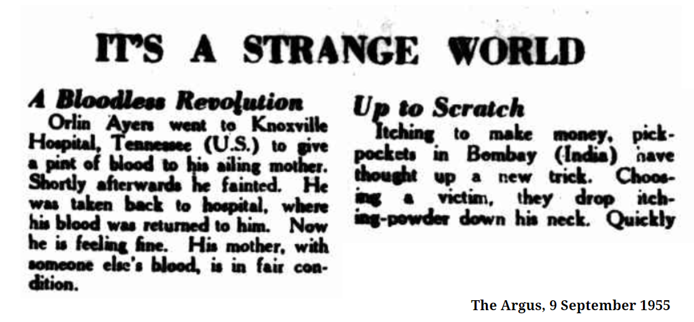

IT'S A STRANGE WORLD
A Bloodless Revolution
Orlin Ayers went to Knoxville Hospital, Tennessee (U.S.) to give a pint of blood to his ailing mother. Shortly afterwards he fainted. He was taken back to hospital, where his blood was returned to him. Now he is feeling fine. His mother, with someone else's blood, is in fair condition.
Up To Scratch
Itching to make money, pick-pockets in Bombay (India) have thought up a new trick. Choosing a victim, they drop itching-powder down his neck. Quickly irritated, he rips off his jacket which the pickpocket offers to hold for him. And afterwards he finds his pockets have been, picked.